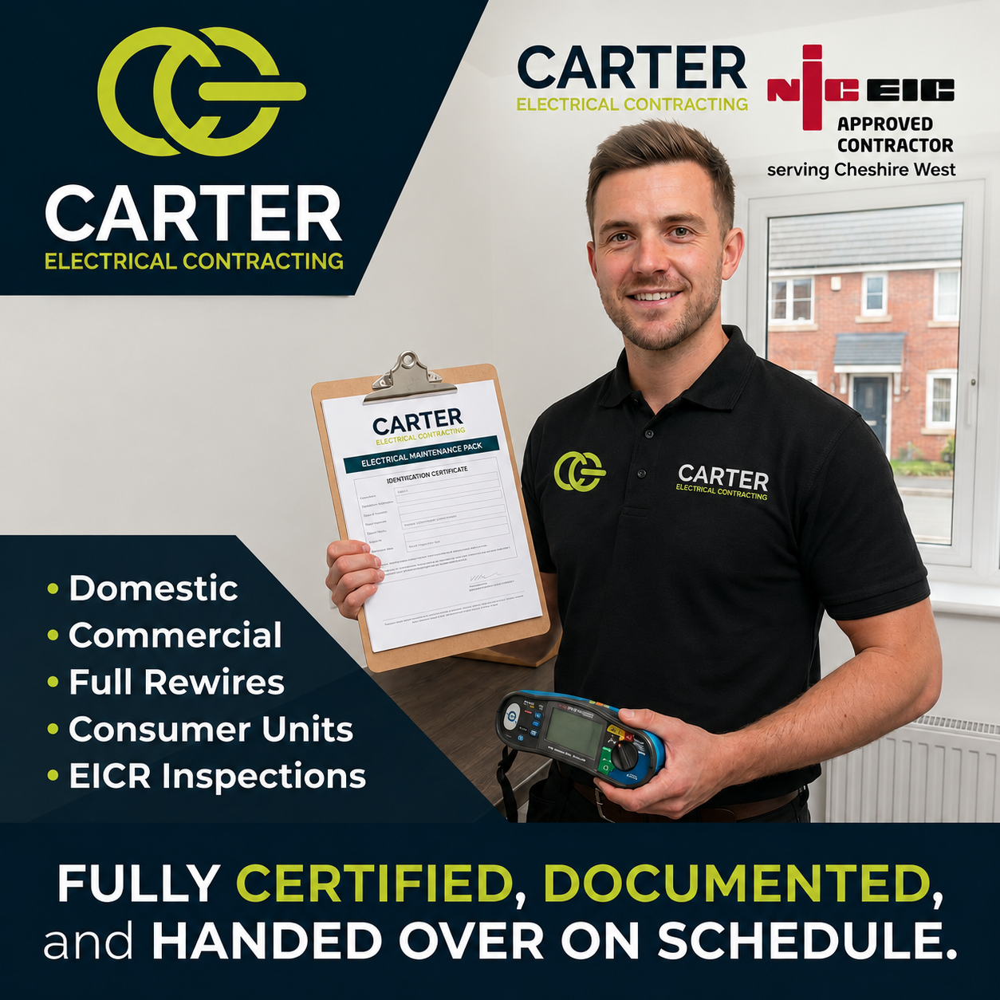

01244 727291
Discuss ProjectLocal electricians covering Ellesmere Port
- NICEIC-approved.
NICEIC-approved commercial, industrial, domestic and renewables electricians serving Ellesmere Port (CH65, CH66) and the surrounding Cheshire West. EICR testing, EV chargers, full rewires and commercial fit-outs.
Takes 60 seconds • We'll be in touch within 48 hours
CoverageEllesmere Port & Cheshire West
AssuranceFully Insured · Guaranteed
AccreditationNICEIC Approved
SectorsCommercial · Domestic · Industrial
 NICEICApproved Contractor
NICEICApproved ContractorFully InsuredGuaranteed Work
Chester · CH3Local & On-Call
18th EditionBS 7671 Compliant
Local Electricians
Approved electricians in Ellesmere Port, done properly the first time.
We deliver reliable commercial, industrial, and domestic electrical services throughout Ellesmere Port.
Our team routinely carries out three-phase power installations and machinery wiring along the M53 corridor, retail fit-outs at Cheshire Oaks, and landlord EICR safety checks and rewires across the CH65 and CH66 postcodes.
Contact us for a clear, fixed-price quote.

Coverage
CH65, CH66
Response time
Within 48 hours
Distance from HQ
9 miles
Accreditation
NICEIC + OZEV
Documented projects
6 in Ellesmere Port
Services
Our electrical services in Ellesmere Port.
Five service lines, one in-house team. Here's how each applies to the Ellesmere Port market - and what our Ellesmere Port clients most often call us about.


Commercial Services
Commercial Electrical.
Cheshire Oaks, Coliseum Retail Park and the Stanney Lane trading estates all drive a steady flow of shop and restaurant fit-outs, landlord-side compliance testing, and emergency-lighting upgrades. Our team is used to working around live retail trading hours and overnight shutdown windows.
Typical scopes we quote for in Ellesmere Port: full distribution and sub-mains replacements, emergency-lighting upgrades to BS 5266, BS 5839-1 fire detection, retail and restaurant fit-outs, data containment and structured cabling, EICR remedials following a failed report, and scheduled shutdowns timed around the business's trading hours.
Domestic Services
Domestic Electrical.
The CH65/CH66 housing stock is a mix of 1960s–1970s estates needing replacement consumer units and full rewires, and newer developments where we're installing OZEV-approved EV chargers and smart home controls.
Common domestic jobs across Ellesmere Port: full and partial rewires, replacement consumer units (fuseboards), OZEV-approved EV charger installs with load management, smart-lighting and smart-heating retrofits, extensions, loft conversions and garage conversions, external lighting and outbuilding supplies, and fault finding when a main breaker keeps tripping.
Neighbourhoods served
Areas we cover.
Our electricians work across every part of Ellesmere Port - covering CH65, CH66. If your address is inside any of the following neighbourhoods, you're well inside our core coverage zone:
Little Sutton
Whitby
Great Sutton
Hooton
Overpool
Rivacre
Strawberry
Wolverham
We also work around key Ellesmere Port locations including Cheshire Oaks Designer Outlet, Stanlow Refinery, Coliseum Retail Park, Essar petrochemical complex, Port Arcades shopping centre. If you're scoping electrical work at one of these or on a nearby site, we've likely been on-site in the area recently - ask us for a reference.
Recent Work
Featured project & local work.
The nearby Prenton, Wirral commercial distribution upgrade: a full mains distribution replacement, three-phase board install and cable-trunking redesign following an inspection that flagged multiple issues.
We've completed 6 documented electrical installations or compliance programmes in and around Ellesmere Port. Below is a selection of recent projects illustrating our standard of work:

Common Questions
Frequently asked questions.
How do I find a qualified commercial electrician in Ellesmere Port?
When hiring a contractor for commercial properties in Ellesmere Port, look for NICEIC or NAPIT registration. Carter Electrical is fully NICEIC-approved. We deliver compliant services for retail units around Cheshire Oaks, office premises in the town centre, and industrial premises along the M53 corridor, providing full certification at handover.
Do you provide commercial electrical services near Cheshire Oaks?
Yes, we regularly support retail and hospitality operators around Cheshire Oaks and the Coliseum Retail Park. Our local team carries out shop fit-outs, emergency lighting installations to BS 5266 standards, and planned compliance testing outside of standard trading hours to minimize business disruption.
What domestic electrical upgrades do you offer in CH65 and CH66?
Our domestic electricians handle full property rewires, replacement consumer units (fuse boxes), and general electrical upgrades across Great Sutton, Little Sutton, and Whitby. All domestic work complies with Part P of the Building Regulations and is backed by our NICEIC warranty.
How often should landlords in Ellesmere Port arrange EICR inspections?
Private landlords must arrange an Electrical Installation Condition Report (EICR) at least every five years. We conduct landlord electrical safety testing across Ellesmere Port, identifying issues quickly and issuing detailed, digital EICR certificates within 48 hours of the test.
Can you install workplace EV chargers in Ellesmere Port?
Yes. We are OZEV-approved EV charger installers. We design and install fast charging points for offices, commercial car parks, and industrial units, configuring load management systems to balance the power draw safely with your main supply.
Which postcodes and villages do you cover around Ellesmere Port?
From our Christleton base, we serve the whole of Ellesmere Port, including CH65 and CH66 postcodes. Our engineers regularly cover Great Sutton, Little Sutton, Whitby, Wolverham, Overpool, Hooton, Ledsham, and Capenhurst.
Also covering
Nearby coverage.
We cover the wider Cheshire West region from our Chester base. If you're scoping work outside Ellesmere Port proper, the following are also in our core patch:
Start a conversation
Need an electrician in Ellesmere Port?
Get in touch today.
Brief the scope in three steps. We'll be in touch within 48 hours.
Direct line
· 01244 727291Get Your Free Quote
🔒100% Secure. No obligation. Your data is strictly protected.
Tweaks